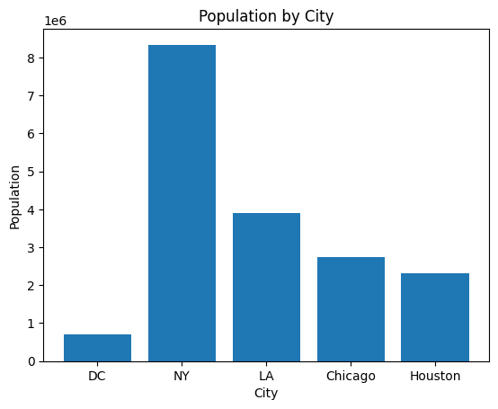

Week 1 — Session 1: Building a Histogram in Python
Goal: Getting familiar with jupyter notebook, pandas, seaborn, markdown, quarto: - Loading the data and validating it.
- First chart with matlibplot Figure 1
- First chart with seaborn Figure 2
- Explore seaborn penguins dataset
import matplotlib.pyplot as pltimport seaborn as sns# Matplotlib bar chartplt.bar(cities["city"], cities["population"])plt.title("Population by City")plt.xlabel("City"); plt.ylabel("Population")plt.show()

Figure 1: population bar chart with matlibplot
# Seaborn bar chartsns.barplot(data=cities, x="city", y="population")plt.title("Population by City (Seaborn)")plt.show()
Figure 2: population bar chart with seaborn
cities.describe(include="all")print("Missing values by column:\n", cities.isna().sum())
Missing values by column:
city 0
population 0
dtype: int64
penguins = sns.load_dataset("penguins").dropna()ax = sns.scatterplot(data=penguins, x="flipper_length_mm", y="body_mass_g", hue="species")ax.set(title="Penguins: Flipper vs Body Mass", xlabel="Flipper length (mm)", ylabel="Body mass (g)")
[Text(0.5, 1.0, 'Penguins: Flipper vs Body Mass'),
Text(0.5, 0, 'Flipper length (mm)'),
Text(0, 0.5, 'Body mass (g)')]
Week 1 — Session 2: Building a Histogram in Python
Goal: Replicate the spirit of the D3 unemployment histogram (Observable reference) using Python, step by step.
We’ll start from a single-column CSV of values (uploaded as unemployment-x.csv) and cover:
- Loading the data and validating it.
- Choosing a sensible binning strategy (Freedman–Diaconis and fixed-bin alternatives).
- Computing histogram counts and edges with NumPy.
- Plotting the histogram with Matplotlib (counts and density versions).
- Documenting assumptions and labeling the chart.
Learning Objectives
Understand how a histogram is constructed from raw numeric values.
Apply the Freedman–Diaconis rule to choose bin widths.
Use numpy.histogram and numpy.histogram_bin_edges to get counts and bin edges.
Create publication-ready histograms in Matplotlib (one chart per cell).
import sysfrom pathlib import Pathimport numpy as npimport pandas as pdimport matplotlib.pyplot as pltprint("Python:", sys.version.split()[0])print("pandas:", pd.__version__)print("numpy:", np.__version__)print("matplotlib:", plt.matplotlib.__version__)
s = pd.to_numeric(df['rate'], errors="coerce").dropna()print(f"Series length after dropping NaNs: {len(s)}")# Basic sanity checksprint("Min/Max:", float(s.min()), float(s.max()))print("Mean/Std:", float(s.mean()), float(s.std(ddof=1)))
Series length after dropping NaNs: 3219
Min/Max: 1.6 26.4
Mean/Std: 5.423330226778502 2.3881985261101404
2) Choose Bins: Freedman–Diaconis & Alternatives
A histogram groups values into bins. The Freedman–Diaconis rule suggests a bin width: \(h = 2 \cdot IQR \cdot n^{-1/3}\) , where IQR is the interquartile range and n is the sample size. The number of bins is roughly: \(\lceil (\max - \min) / h \rceil\)
We’ll compare: - Freedman–Diaconis (bins='fd' in NumPy). - A fixed number of bins (e.g., 20) similar to common defaults. - (Optional) Sturges or square-root rules.
# Freedman–Diaconis bin edges via NumPyedges_fd = np.histogram_bin_edges(s, bins='fd')print("FD edges count:", len(edges_fd))# Also compute the FD bin count via the formula for illustrationq75, q25 = np.percentile(s, [75, 25])iqr = q75 - q25n = s.sizeh =2* iqr * (n ** (-1/3)) if iqr >0elseNoneif h isnotNoneand h >0: approx_bins =int(np.ceil((s.max() - s.min()) / h))print("FD approx. bin count (manual):", approx_bins, "| h =", h)else:print("IQR=0 (or too small); FD rule degenerates. Falling back to 20 bins.") edges_fd = np.histogram_bin_edges(s, bins=20)# Fixed bin edges (20 bins) for comparisonedges_20 = np.histogram_bin_edges(s, bins=20)print("Fixed (20) edges count:", len(edges_20))
FD edges count: 85
FD approx. bin count (manual): 84 | h = 0.2979973149232311
Fixed (20) edges count: 21
3) Build the Histogram Arrays
NumPy returns counts and edges. The i-th bin is the interval [edges[i], edges[i+1]).